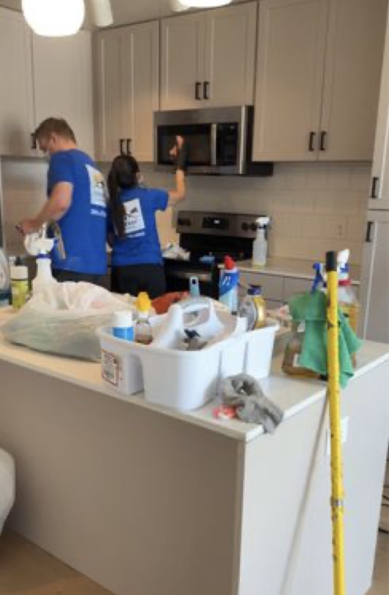
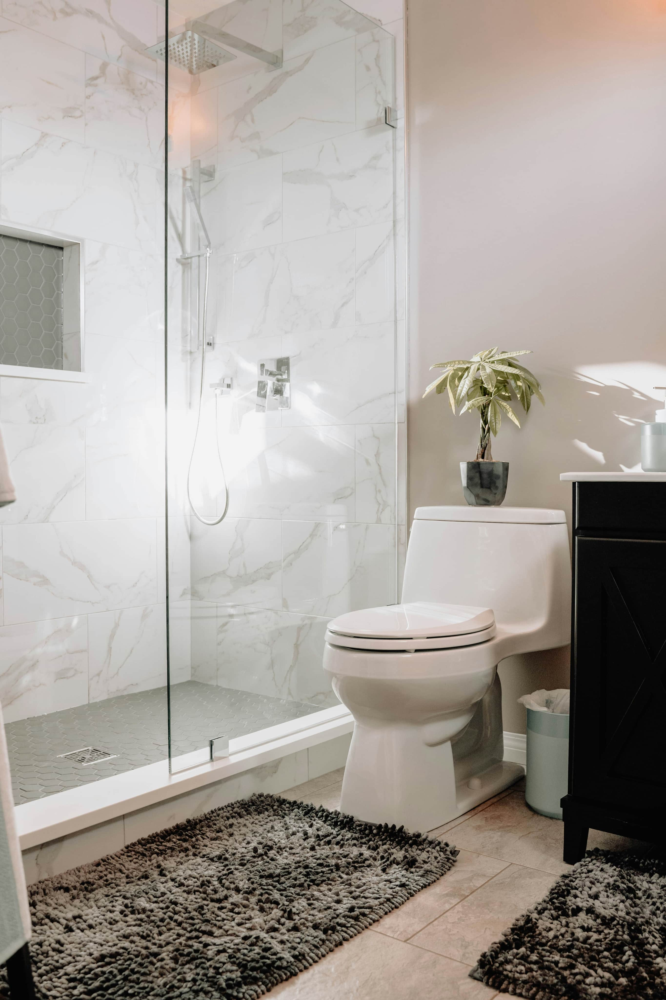

Salt Lake County cleaning
Home cleaning for Salt Lake County houses, condos and townhomes.
Sun Ray Cleaning Services provides eco-friendly recurring cleaning, deep cleaning and move-in/move-out cleaning for busy Salt Lake County households.

Valley home care
Reliable cleaning for commuter households and busy families.
Salt Lake County clients often need consistent recurring cleaning, move-ready resets and deep cleans that handle high-use kitchens, bathrooms, floors and indoor dust from valley air.
- Recurring home cleaningWeekly, biweekly and monthly service for everyday maintenance.
- Move-in and move-out cleaningDetailed cleaning for rentals, sales, purchases and transitions.
- One-time deep cleaningA practical reset for bathrooms, kitchens, floors, fixtures and hard-to-reach dust.

Communities served
Salt Lake County cleaning service areas.
Salt Lake CitySandyDraperSouth JordanMillcreekCottonwood HeightsHolladayRiverton
Salt Lake County FAQs
Answers for Salt Lake County cleaning.
Which Salt Lake County cities do you serve?
We serve Salt Lake City, Draper, Sandy, South Jordan, Millcreek, Cottonwood Heights and nearby communities.
Are your prices different for Salt Lake County?
Pricing is based on home size, service type, condition and frequency. Text or call for a transparent quote with no surprises.
Do you clean condos and townhomes?
Yes. We clean houses, condos, townhomes and rental properties across Salt Lake County.
Book Salt Lake County cleaning
Get a clear quote for your Salt Lake County home.
Send bedrooms, bathrooms, square footage, pets, current condition and preferred cleaning frequency.